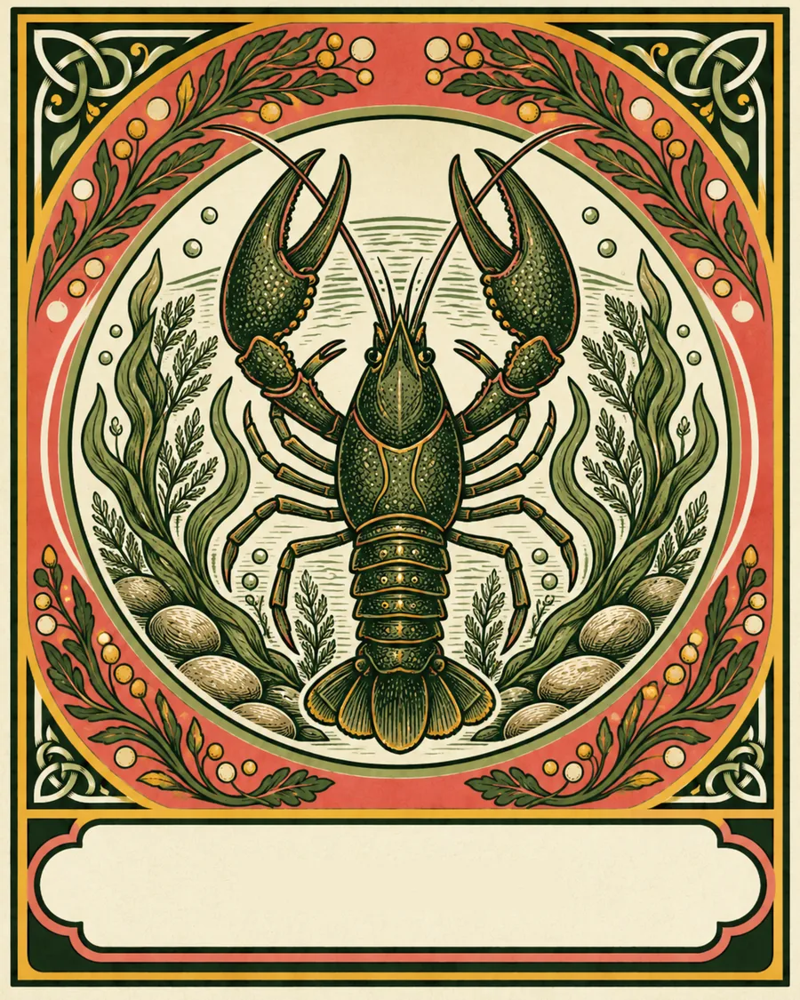
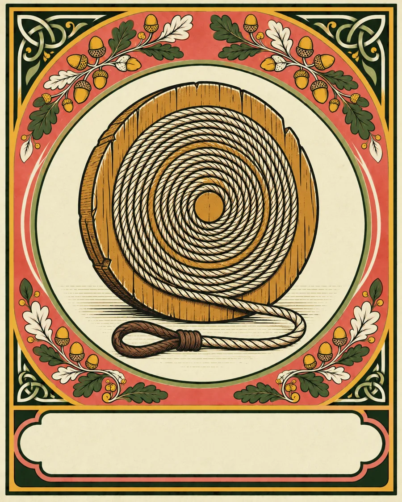
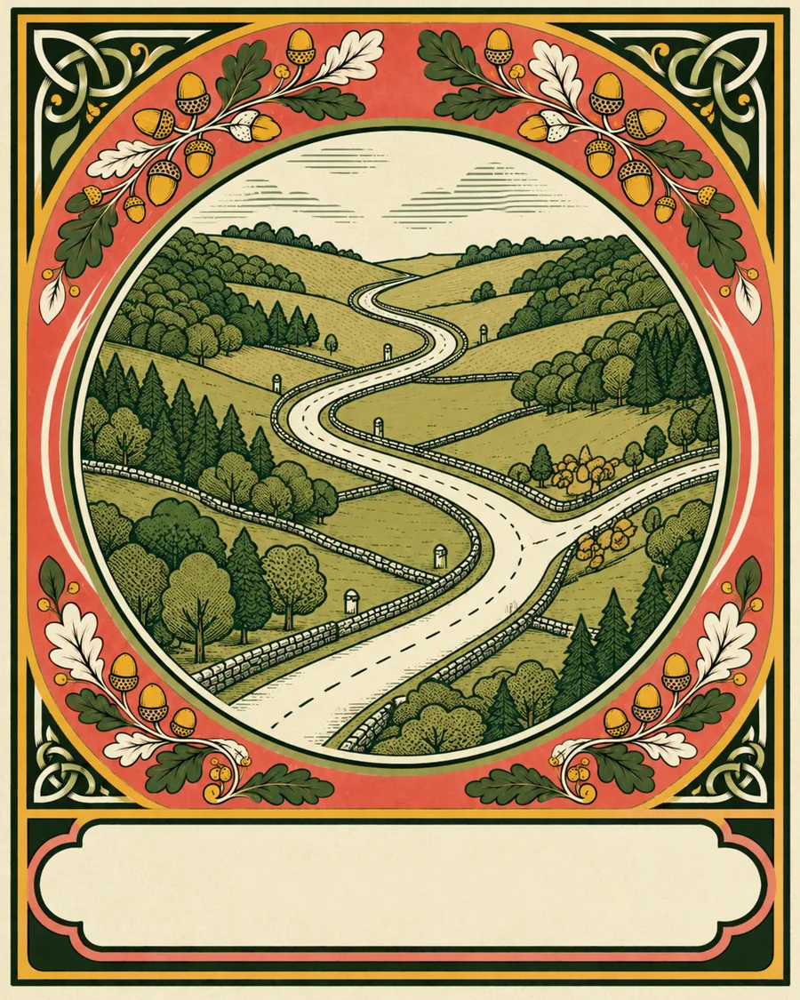
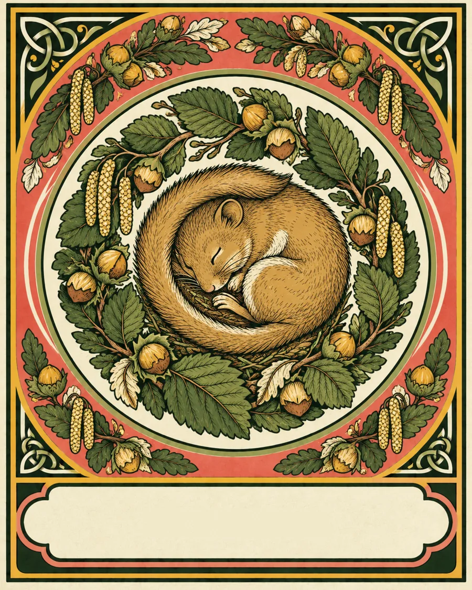
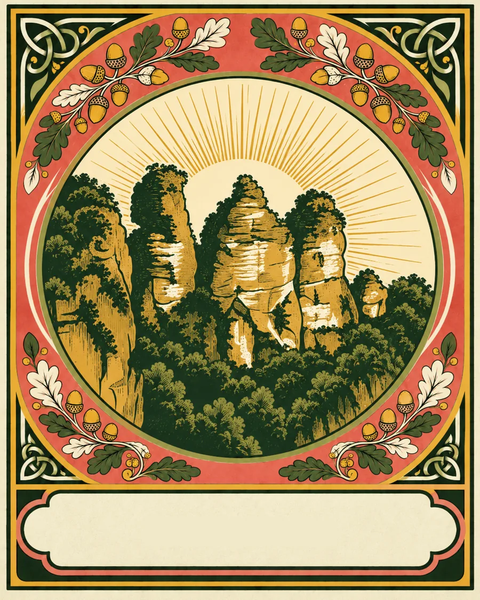

LUDENS
Il gioco non l'ha inventato l'uomo
Esperienze di gruppo dove la natura si osserva con il rigore di chi la studia e le persone si incontrano davvero, attraverso il gioco.
I cuccioli di orso giocano. I lupi giocano. I delfini giocano.
Il gioco è il modo più antico che i mammiferi hanno per conoscere il proprio ambiente e legarsi al branco. E noi ce lo siamo dimenticato.
I nostri viaggi servono a ricordarlo: in natura selvaggia, affianchi chi la studia e riscopri il gioco. Quello degli animali, e quello dei popoli che quei territori li abitano.
Due strumenti,
una trasformazione

I
La natura, vista da dentro
Non la guardiamo da un belvedere: la attraversiamo insieme a chi la conosce davvero, guide e persone che vivono il territorio ogni giorno. Impari a leggere tracce, suoni e segni di un ecosistema, e a guardare un luogo con occhi nuovi.

II
Il gioco, come lo giocano qui
Ogni territorio ha i suoi giochi tradizionali, tramandati da chi lo abita. Li impariamo e li giochiamo insieme: è il modo più rapido per abbassare le difese, togliersi le maschere e costruire legami veri, con il gruppo e con le comunità locali.
Il viaggio, in quattro carte
Non è un elenco di luoghi da spuntare
-

Esplora Territori selvaggi, lontani dal turismo di massa. Si cammina, ci si muove, ci si perde il giusto.
-
Impara Osservi la vita che scorre con il rigore di uno scienziato e il cuore di un esploratore.
-
Gioca Senza telefono, senza pubblico. Solo presenza, regole antiche e il gruppo che diventa branco.
-

Proteggi Ci sporchiamo le mani, davvero. Il legame con un luogo si costruisce prendendosene cura.
Manifesto
Non sei un turista,
sei parte dell'equilibrio
-
Vivi il posto che visiti
Qui non si piantano bandierine. L'esperienza è un'immersione totale nella cultura locale: esplora, impara, proteggi.
-
Vivi il momento
Non siamo qui per collezionare foto da postare sui social. Mentre giochi non c'è spazio per il telefono: la priorità assoluta è la presenza reale.
-
Spogliati delle maschere
Parla, esplora, vivi con curiosità. Lasciarsi trasportare dal gioco e dall'esplorazione potrebbe rivelarsi la cosa più incredibile che tu abbia mai vissuto.
-
Ci sporchiamo le mani
Ci mettiamo in gioco con il corpo, nella terra, nell'acqua, nel bosco. Il legame con la natura e con le persone si costruisce così: facendo, non guardando.
Se cerchi la comodità della superficie, non siamo noi.
Se cerchi la verità della natura e la forza di una community che cresce, sei a casa.

È per te se
Sei pronto a metterti in gioco. Letteralmente.
- Cerchi una disconnessione vera, stanco di una vita sempre iperconnessa.
- Esplori con curiosità, ami la natura e il movimento, e il turismo di massa non fa per te.
- Vuoi legami autentici, non conversazioni di superficie.
- Vuoi che la tua esperienza lasci un segno concreto sulla natura che attraversi.
La prima esperienza sta prendendo forma
Entra nel branco prima che parta
Non abbiamo ancora date né itinerari: li stiamo costruendo adesso. Lasciaci la tua email e sarai tra i primi a sapere dove andremo, con la possibilità di aiutarci a dare forma alla prima esperienza.
Niente spam, poche mail e solo quando c'è qualcosa da raccontare.
@ludens.experience